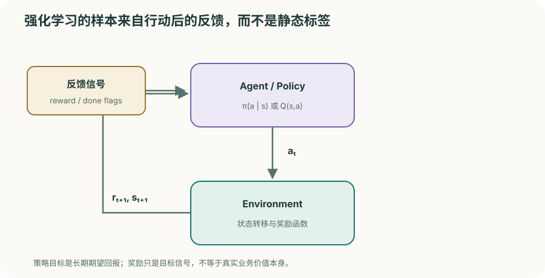
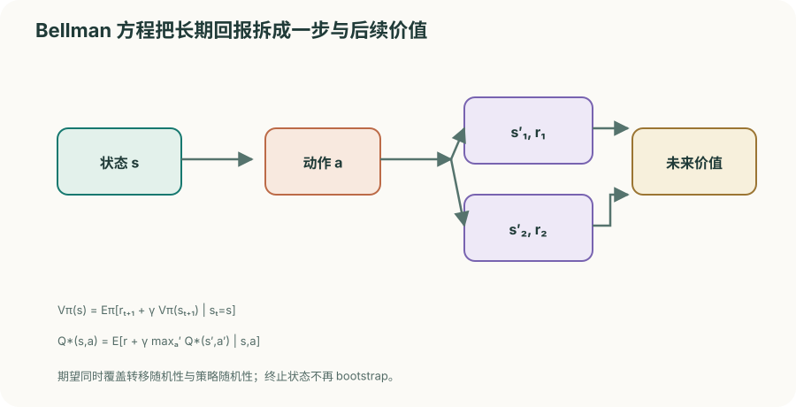
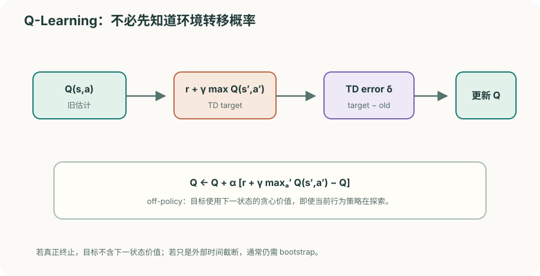
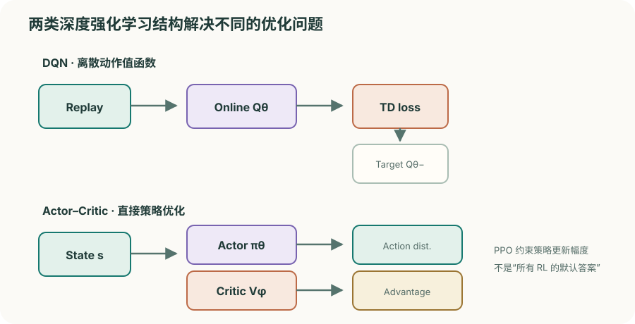

强化学习：MDP、Q-Learning、DQN 与策略梯度
强化学习研究智能体如何通过行动和反馈优化长期回报。MDP 描述状态转移与奖励，Q-Learning 用时序差分更新动作价值，DQN 用神经网络近似 Q 函数，策略梯度则直接优化行动分布。
01 · 智能体与环境的反馈闭环
监督学习从带标签样本中学习映射；强化学习则让智能体在环境中选择动作，环境返回奖励和下一状态。奖励可能延迟，动作会改变后续可见信息与可选动作，因此智能体必须权衡即时反馈与长期后果。

奖励函数是优化目标的代理，不自动等于真实业务价值。若奖励设计不完整，智能体可能找到“刷分”策略（reward hacking）；安全约束、人工监督和离线评估在高风险场景尤其重要。
02 · MDP：状态、动作、奖励与折扣
马尔可夫决策过程（MDP）常写为 (S,A,P,R,γ)：状态空间 S、动作空间 A、转移分布 P、奖励函数 R 和折扣因子 γ。马尔可夫性质表示给定当前状态与动作后，下一状态分布不再依赖更早历史。若观测不包含足够状态信息，问题可能是部分可观测 MDP（POMDP），需要信念状态、记忆或其他估计。

γ 越大，远期奖励在目标中的权重越高；γ 不是“智能体更有远见”的保证。有限回合、持续任务、奖励尺度和终止定义都会影响回报解释。
03 · Q-Learning：时序差分与探索
Q(s,a) 估计在状态 s 采取动作 a 后、未来按最优策略行动可获得的折扣回报。Q-Learning 使用一步时序差分目标更新表格：

ε-greedy 在概率 ε 下随机探索，否则选择当前估计价值最高的动作。ε 太小可能过早陷入局部策略，太大则持续随机；探索率日程、状态覆盖、奖励稀疏程度和随机种子都会影响结果。在有限表格 MDP 的经典收敛结论依赖充分探索、合适学习率等条件，不能直接外推到任意函数逼近场景。
import numpy as np
rng = np.random.default_rng(25)
# 四个状态的链：0 -- 1 -- 2 -- 3（进入 3 获得奖励并终止）
q = np.zeros((4, 2), dtype=float) # action 0=left, 1=right
alpha, gamma = 0.15, 0.95
for episode in range(2500):
state = 0
epsilon = max(0.03, 0.35 * (1 - episode / 2500))
for _ in range(8):
action = int(rng.integers(2)) if rng.random() < epsilon else int(np.argmax(q[state]))
next_state = max(0, min(3, state + (1 if action == 1 else -1)))
terminated = next_state == 3
reward = 1.0 if terminated else -0.02
target = reward if terminated else reward + gamma * q[next_state].max()
q[state, action] += alpha * (target - q[state, action])
state = next_state
if terminated:
break
assert q[0, 1] > q[0, 0]
print("Q at start:", q[0].round(3).tolist())04 · DQN：用神经网络近似动作价值
当状态空间巨大（例如图像像素）时，无法为每个状态动作对维护一张表。DQN 用神经网络近似 Q(s,a)，输入状态并输出离散动作的 Q 值。经典 DQN 的两个稳定化机制是经验回放：把历史 transition 放入 buffer 并随机采样；以及目标网络：用延迟更新的参数构造 TD target，减少目标随在线网络同步抖动。

对 batch 中动作索引 gather 当前 Q 值；下一状态可用 Double DQN 先由在线网络选择动作，再由目标网络评估该动作，减轻最大化操作带来的过估计。若 transition 真正到达 MDP 终止状态，target 不再 bootstrap；若仅因外部时间上限截断，通常仍要使用可用的下一状态估值。
import torch
import torch.nn.functional as F
batch, actions = 8, 4
q_online = torch.randn(batch, actions, requires_grad=True)
next_q_online = torch.randn(batch, actions)
next_q_target = torch.randn(batch, actions)
a = torch.randint(0, actions, (batch, 1))
rewards = torch.randn(batch)
terminated = torch.tensor([0, 0, 1, 0, 0, 1, 0, 0], dtype=torch.float32)
gamma = 0.99
current = q_online.gather(1, a).squeeze(1)
next_actions = next_q_online.argmax(dim=1, keepdim=True) # Double DQN selection
next_values = next_q_target.gather(1, next_actions).squeeze(1)
with torch.no_grad():
target = rewards + gamma * (1.0 - terminated) * next_values
loss = F.smooth_l1_loss(current, target)
loss.backward()
assert current.shape == target.shape == (batch,)
print("DQN batch loss:", round(loss.item(), 4))05 · 策略梯度、Actor–Critic 与 PPO
值函数方法先估计 Q，再通过最大化 Q 导出动作；策略梯度直接参数化 πθ(a|s)，利用采样轨迹上的回报调整动作概率。REINFORCE 的基本形式为：
减去与动作无关的 baseline（例如状态价值 V(s)）可降低梯度估计方差。Actor 输出策略，Critic 估计价值或优势；PPO 使用 clipped surrogate objective 限制概率比率的有效更新范围。Clip 并不构成严格的信赖域保证，也不意味着 PPO 在所有环境中都是最佳算法。
import torch
from torch import nn
from torch.distributions import Categorical
policy = nn.Linear(4, 3)
observations = torch.randn(6, 4)
distribution = Categorical(logits=policy(observations))
actions = distribution.sample()
returns = torch.tensor([1.0, 0.2, -0.1, 0.8, 0.3, -0.2])
log_prob = distribution.log_prob(actions)
baseline = returns.mean()
loss = -(log_prob * (returns - baseline)).mean()
loss.backward()
assert torch.isfinite(loss)
print("REINFORCE loss:", round(loss.item(), 4))import torch
old_logp = torch.tensor([-0.8, -1.2, -0.5, -1.0])
new_logp = torch.tensor([-0.7, -1.5, -0.4, -0.9], requires_grad=True)
advantage = torch.tensor([1.0, -0.7, 0.4, 0.2])
epsilon = 0.2
ratio = torch.exp(new_logp - old_logp)
surrogate = ratio * advantage
clipped = torch.clamp(ratio, 1 - epsilon, 1 + epsilon) * advantage
policy_loss = -torch.minimum(surrogate, clipped).mean()
policy_loss.backward()
print("ratio:", ratio.detach().round(decimals=3).tolist(), "loss:", round(policy_loss.item(), 4))06 · 评估、终止语义与真实世界边界
Gymnasium 当前 API 的 step() 返回 (observation, reward, terminated, truncated, info)。terminated 表示任务定义的终止状态；truncated 通常表示外部时间限制等原因截断。二者都意味着当前 episode 结束并需 reset，但 bootstrap target 的处理可能不同：真正终止不再估计未来回报，单纯时间截断通常仍要根据可用的下一观测估值。
RL 实验至少应报告多个随机种子、学习曲线的分布、训练步数、环境版本、奖励定义、探索策略和评估协议。离线评估不能简单复用在线交互假设；机器人还要面对仿真到现实的差距与安全约束；推荐系统要避免把短期点击率当作长期用户价值。
- Reward hacking：策略优化了指标，却绕过任务真实意图。
- 分布漂移：训练环境与部署环境状态转移不同。
- 探索风险：在线试错可能造成现实损失。
- 部分可观测：观测不等于真实状态，单步策略可能缺少历史信息。
- 高方差：结果对随机种子、超参数和奖励尺度敏感。
强化学习不是分类与回归的通用替代品。只有当动作会改变未来状态、长期后果重要且能够安全获得交互数据时，RL 的建模成本才可能值得承担。
来源、实现版本与适用边界
论文用于核对算法定义与历史主张；官方文档用于核对 API 行为。图中的张量和数值若未明确引用论文实验，均为构造的教学示例，不代表 benchmark 或生产效果。
- Sutton & Barto, Reinforcement Learning: An Introduction (2nd edition)
- Watkins & Dayan (1992), Q-learning
- Mnih et al. (2015), Human-level control through deep reinforcement learning
- Williams (1992), Simple Statistical Gradient-Following Algorithms for Connectionist Reinforcement Learning
- Schulman et al. (2017), Proximal Policy Optimization Algorithms
- Gymnasium Env API：reset、step、terminated 与 truncated